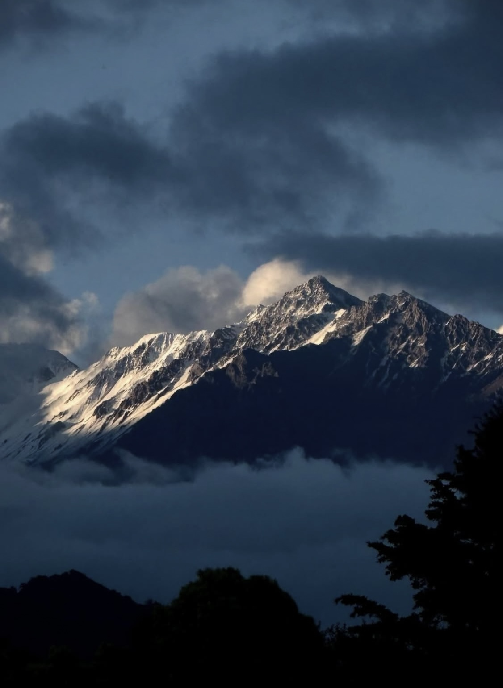
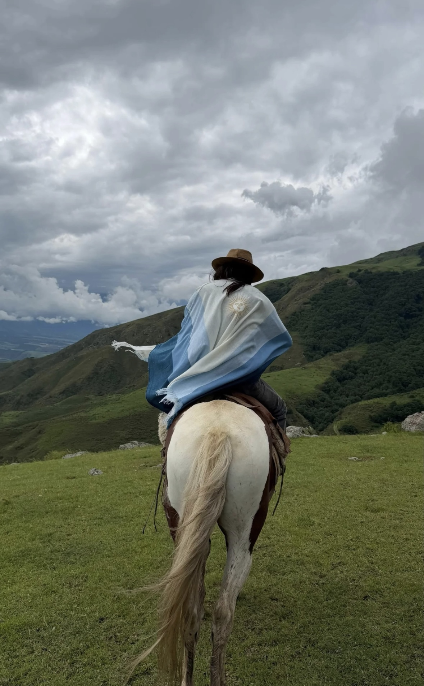
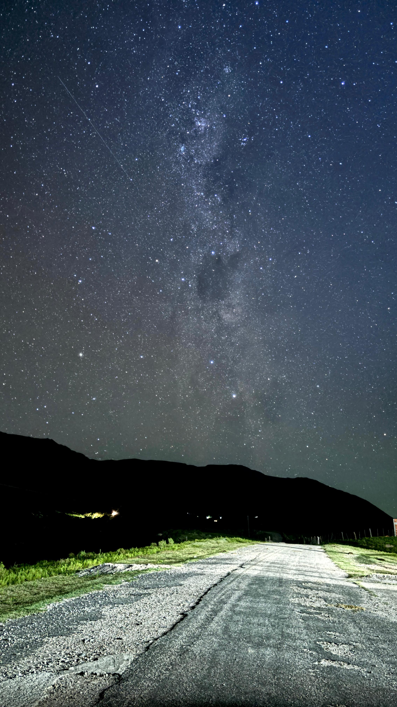
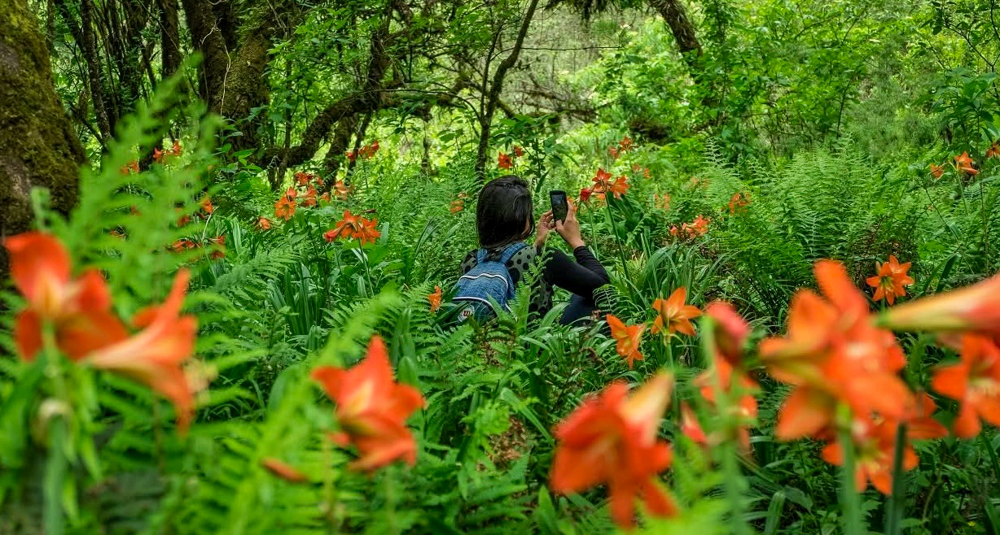
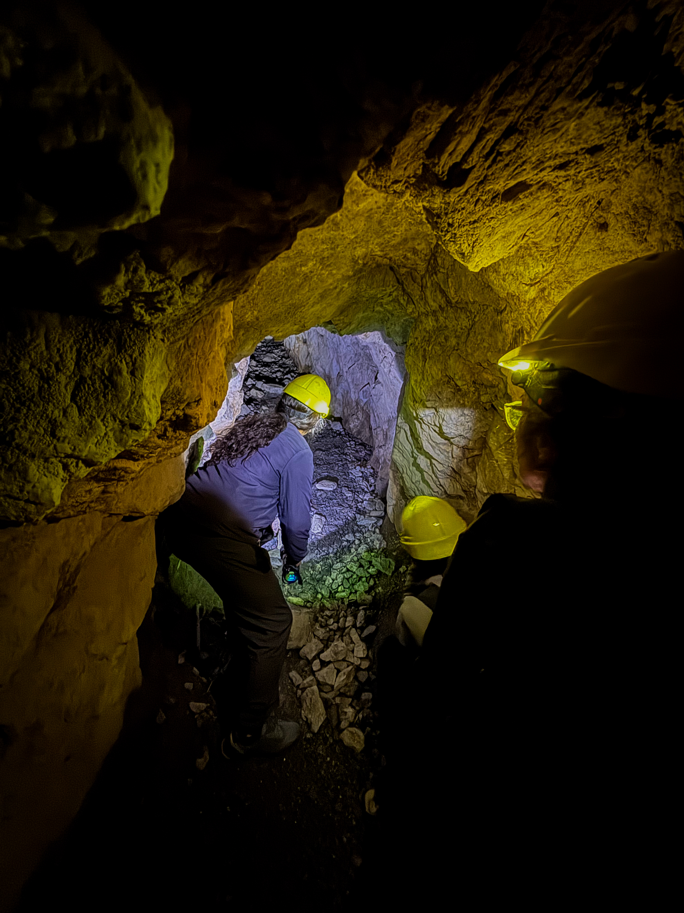
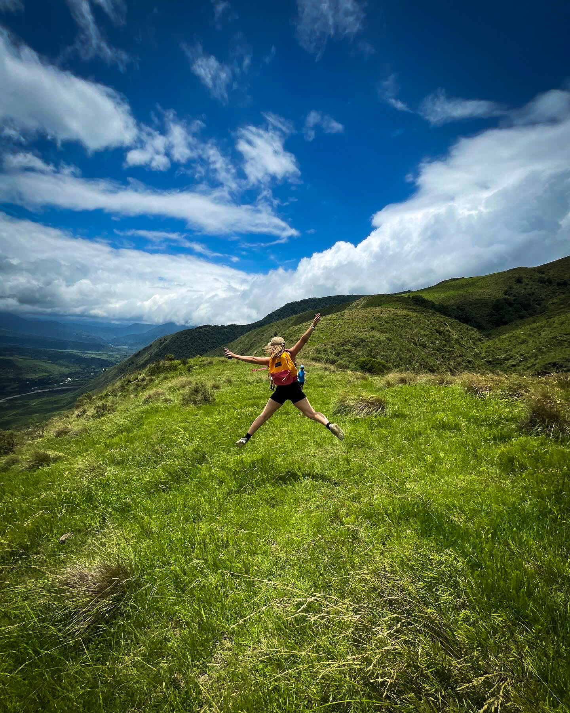
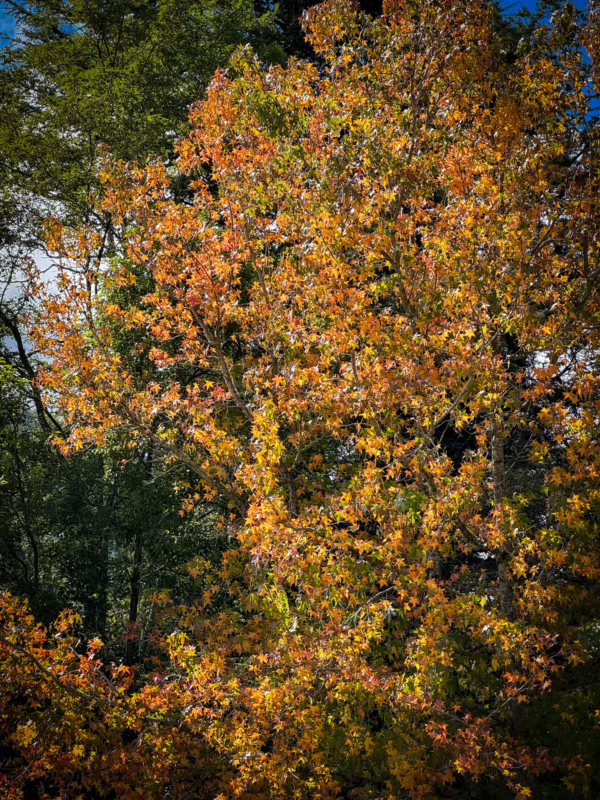

Trekking de altura
Cruce de los Nevados
Una travesía de alta montaña entre glaciares de roca y lagunas escondidas.
Aconquija es un pueblo de paso lento, abrazado por una de las sierras más altas del país. Acá la niebla baja por las laderas al amanecer, los arroyos de altura cortan senderos de piedra y cada vecino conoce una historia distinta sobre la montaña. Venimos guardando este lugar para quien busca algo real.
Excursiones guiadas, senderos por cuenta propia o itinerarios armados con gente del lugar. Vos elegís el ritmo.

Una travesía de alta montaña entre glaciares de roca y lagunas escondidas.

Un salto de agua entre el bosque, a media hora del pueblo.

Recorré los senderos altos como lo hacían los arrieros.

Cielos sin contaminación lumínica, ideales para mirar las estrellas.
Una selección de rincones de Aconquija y sus alrededores, pensada para armar tu propio recorrido.

Viaja por el universo sin salir de la tierra.

Deja que la naturaleza te sorprenda en cada sendero de Los Alisos.

Explora las Ruinas del Pucara, donde la historia cobra viday cada rincón guarda el legado de nuestros antepasados.

Descubrí Aconquija desde una nueva perspectiva:recorré sus senderos a caballo y viví una experiencia inolvidable redeado de naturaleza.

Adentrate en los tuneles de Yunca y descubrí un recirrido único, donde la naturaleza y el misterio se encuntran.
Cada momento del año tiene su propia versión de la sierra. Elegí la que te llama.
El deshielo alimenta cascadas y arroyos. Es la mejor temporada para trekking de altura y cabalgatas hasta los nevados, con tardes que se estiran hasta las nueve.

Los colores ocres y rojizos cubren las laderas. Las noches empiezan a refrescar y el cielo se vuelve más nítido para mirar estrellas.

La nieve cubre las cumbres y el silencio se hace total. Ideal para fotografía de paisaje y para quienes buscan desconectar de verdad.

El deshielo despierta arroyos y la vegetación de altura vuelve a brotar. Días templados, perfectos para los senderos más largos.

Alojamiento, gastronomía y guías locales para armar tu estadía sin vueltas.
Posadas de montaña, cabañas y hospedajes familiares con vista a la sierra.
Cocina regional, cabrito de monte y productos de huerta de cercanía.
Baqueanos certificados para trekking, cabalgatas y travesías de altura.
Tejidos en telar, cerámica y productos regionales hechos a mano.
Aconquija no se visita rápido. Es un lugar para quedarse unos días, caminar despacio y dejar que la montaña marque el paso. Te esperamos al pie de los Nevados.
Planeá tu visita